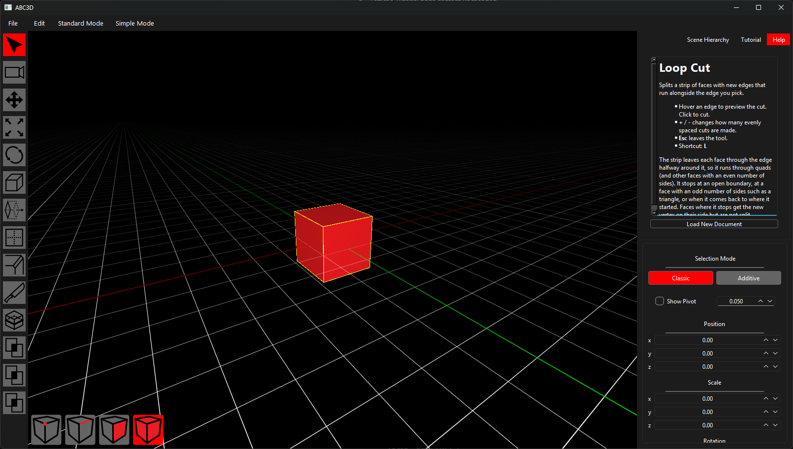
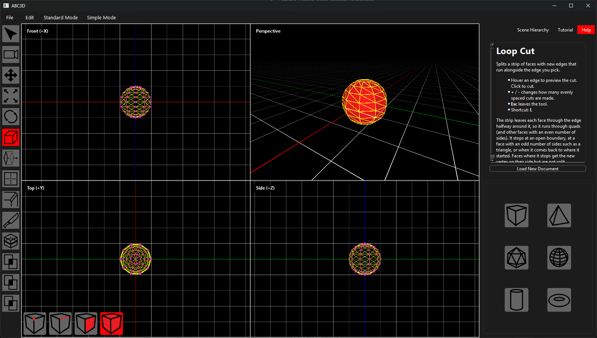

Modes
Introduction
In ABC3D there are two main modes of modeling: standard and simple.
Standard
Standard mode is the average 3D modeling experience you would find in most other modeling programs. It consists of a single perspective viewport with standard 3D inputs.

Simple Mode
Simple mode converts the single perspective viewport into quadrants. There is an orthographic projection along each respective axis, as well as the standard perspective view. The idea is to model in 3D by manipulating elements in 2D. Inputs are restricted to 2D, and grids are drawn along each axis to make manipulation more precise.
The user may switch between modes using the buttons in the menu bar above the viewport.
